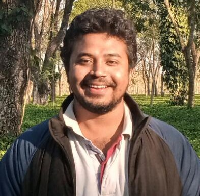

|  | Ph.D student |
I am a Ph.D. student in the Department of Computer Science and Engineering at IIT Kanpur and I am working with Subhajit Roy. I have completed my master's from the Department of Computer Science and Engineering at IIT Guwahati. I hail from Assam, a northeastern state of India, which is known for tea and one-horned rhinoceros.
My research interests include
Formal Methods
Program Synthesis
Program Repair
Intel India Research Fellowship 2023.
Google travel grant to attend OOPSLA 2022 to present our work Synthesizing Abstract Transformers in New Zealand.
An Integrated Program Analysis Framework for Graduate Courses in Programming Languages and Software Engineering
Prantik Chatterjee, Pankaj Kumar Kalita, Sumit Lahiri, Sujit Muduli, Vishal Singh, Gourav Takhar, Subhajit Roy
38th IEEE/ACM International Conference on Automated Software Engineering (ASE 2023).
Symbolic Encoding of LL(1) Parsing and its Applications
Pankaj Kumar Kalita, Dhruv Singal, Palak Agarwal, Saket Jhunjhunwala, and Subhajit Roy
Formal Methods in System Design (FMSD), 2023.
Synthesizing Abstract Transformers
Pankaj Kumar Kalita, Sujit Muduli, Loris D’Antoni, Thomas Reps, Subhajit Roy
Proceedings of the ACM on Programming Languages, Volume 6, Issue OOPSLA 2, 2022
Synthesis of Semantic Actions in Attribute Grammars
Pankaj Kumar Kalita, Miriyala Jeevan Kumar, Subhajit Roy
Proceedings of the 22nd Conference on Formal Methods in Computer-Aided Design (FMCAD), 2022
Interactive Debugging of Concurrent Programs under Relaxed Memory Models
Aakanksha Verma, Pankaj Kumar Kalita, Awanish Pandey, Subhajit Roy
Proceedings of the 18th ACM/IEEE International Symposium on Code Generation and Optimization (CGO), 2020
Automatic Inverse Operation Detection and its Impact in High-level Synthesis
Pankaj Kumar Kalita, Ramanuj Chouksey, Chandan Karfa
24th International Symposium on VLSI Design and Test (VDAT), 2020
Counter-example Generation Procedure for Path-Based Equivalence Checkers
Ramanuj Chouksey, Chandan Karfa, Kunal Banerjee, Pankaj Kumar Kalita, Purandar Bhaduri
IET Software, 2019
Invited to present our work Synthesizing Abstract Transformers, OOPSLA 2022 at ARCS 2023, held in Bhopal, MP, India.
Artifact evaluation committee member